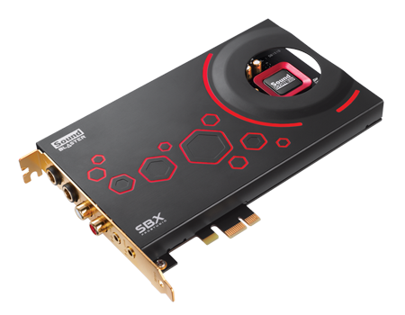

Karty dźwiękowe |
MENU |
| Strona główna |
| Próbkowanie |
| Synteza FM |
| Synteza WT |
| MIDI |
Karta dźwiękowa, karta muzyczna – komputerowa karta rozszerzeń umożliwiająca rejestrację, przetwarzanie i odtwarzanie dźwięku; słuchanie muzyki.
Najbardziej znaną grupą kart dźwiękowych jest seria Sound Blaster firmy Creative Labs.
Obecnie układy dźwiękowe wystarczające do zastosowań amatorskich są zazwyczaj wbudowywane w płytę główną komputera, a nie stanowią karty rozszerzenia. Z powodów historycznych są jednak określane mianem „zintegrowana karta dźwiękowa”. Pojawiły się również zewnętrzne karty dźwiękowe podłączane do komputera przez port USB.
Źródło: Wikipedia
| Mateusz Lewandowski | mt26@o2.pl |